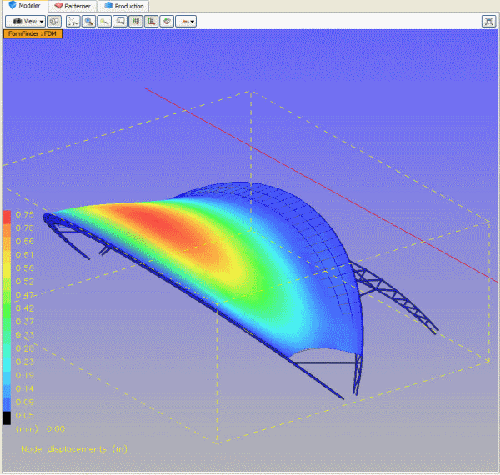
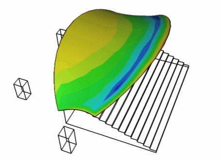
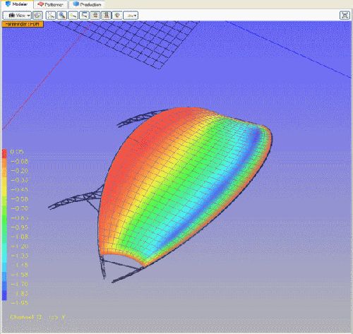

Caedium v4 Sneak Peek: Tensile Membrane Structure Analysis
In the next version of Caedium you will be able to perform a CFD simulation of a tensile membrane structure and then export surface pressure coefficient (Cp) data for structural analysis in ixForten 4000. This exciting development will allow ixForten 4000 users to perform non-linear stress analysis to better determine membrane displacement with more precise wind pressure loads than previously available, leading to more cost efficient structures and supports.

Membrane Displacement Calculated by ixForten 4000Model: courtesy of SobreSaliente Ltda, Cp data source: Caedium Professional
As an example of the new capability, Gerry D'Anza, ixForten 4000 developer, first exported the original membrane, courtesy of SobreSaliente Ltda, from ixForten 4000 using the Wavefront file format (.obj). Next Gerry imported the Wavefront geometry into Caedium, configured the flow volume and physics, and then ran the CFD simulation.

Caedium v4 Membrane CFD Simulation: Streamlines

Caedium v4 Membrane CFD Simulation: Surface Pressure Coefficient (Cp)
Next Gerry exported the Cp surface data and corresponding surface mesh from Caedium for import back into ixForten 4000.

Membrane Cp Displayed in ixForten 4000
As the final stage of the process, Gerry ran a non-linear structural analysis in ixForten 4000 using the Cp data as the boundary loads for the membrane. The results from the ixForten 4000 simulation are shown as displacement contours in the image at the top of this post.
Feedback
Questions? Ideas? Problems?

Recent blog posts
- CFD Simulates Distant Past
- Background on the Caedium v6.0 Release
- Long-Necked Dinosaurs Succumb To CFD
- CFD Provides Insight Into Mystery Fossils
- Wind Turbine Design According to Insects
- Runners Discover Drafting
- Wind Tunnel and CFD Reveal Best Cycling Tuck
- Active Aerodynamics on the Lamborghini Huracán Performante
- Fluidic Logic
- Stonehenge Vortex Revealed as April Fools' Day Distortion Field
 Get our Blog feed
Get our Blog feed
Comments
Precise wind pressure loads?
"precise wind pressure loads"?
I'm shocked. Please reference a paper or data that proves this. Personally I would hate to have a structure like this fall on me because some fool optimized it on a poor analysis.
IMO, by looking at the Cp and velocity profile I don't believe it. Why are the side edge vortices so well behaved? Is there leading edge separation? What's your Reynolds number? How fine (or coarse) is your grid? How are you modeling transition? Are you using wall functions or actually resolving the boundary layer?
It is one thing when people do CFD for nice pretty marketing pictures. It is another when people's lives are at stake.
I'm not saying CFD can't be used to assist in the design of a structure like this. It clearly can. But reality needs to be injected into the process.
CFD vs Bulk Wind Load Assumption
There's plenty 'reality...injected into the process' of designing membrane structures. No one is saying that CFD alone is the only arbitrator of membrane design. There are all manner of standard design practices determined by actual field tests and as with any safety critical design there are various safety factors applied to the final design.
What has been missing during the membrane design process is a means to determine the variation of pressure across a membrane. Previously bulk loads (educated guesses) were assumed and applied to stress models. With CFD more precise variation of wind loads can be applied - even if not exact it is a more precise than previous assumptions.
As you are well aware looking for CFD to exactly mimic the real world can be difficult - in the same way as it is difficult for scale models in wind tunnels to model full size structures. However, there are plenty of areas where less than exact CFD results can help progress the design process. Panel methods have been used and continue to be used to design aircraft, yet they make gross over simplifications, i.e., irrotational, invisicid flow.
CFD is a tool and it's up to the engineer to gain confidence and apply it in an appropriate manner. Good engineers know the sweet spots of modeling techniques, whether it's a napkin, a spread sheet, CFD, or physical testing.
CFD has been used in safety critical design since its inception. Aerospace, automotive, building, power generation, chemical processing,, etc. all these industries have safety concerns associated with fluid flow and CFD has helped (rarely in isolation) provide insights towards better performing and more cost effective designs.
Uncertainty estimate
In general, engineers like to know the uncertainty of such an analysis.
In your estimate/opinion, what is the typical range of uncertainty of the Cp calculation for a membrane such as this? And, if possible, can you please provide the data which supports your statement.
Proof of Concept
This particular example is a proof of concept. I did not perform the simulation and I'm not an expert in the design of membrane structures. Given it is a proof of concept I doubt there was a sensitivity analysis performed, so I can't comment on the uncertainty in the calculation.
I will say that compared to a bulk load assumption CFD will undoubtedly be more accurate - even a panel method would be more accurate.
Precise
Please, in the future, do not claim that CFD provides precise wind pressure loads unless you feel confident in it. Or do you feel confident in it? It seems like you don't. I will agree that CFD provides an estimate.
In regards to panel methods, your statement could easily be incorrect, given what the geometry seems to look like. Sharp leading edges are nonlinear (past 4 degrees angle of attack) due to the leading edge separation bubble/vortex. I personally would not recommend anyone (unless they are an expert) use such an analysis unless the panel code has been augmented with non linear affects. Even that needs to be used with caution since the leading edge bubble/vortex and side edge vortex interact with one another.
CFD can provide precise wind pressure loads
CFD can provide more precise wind pressure loads compared to the bulk loading alternative. I've amended the opening statement to make this clearer. I was not directly referring to this proof of concept example.
Thanks for the lesson on panel methods, but it was just an offhand comment.
Hi Martin I have run this to
Hi Martin
I have run this to compare Cp values against those we calculate by hand following Country codes.
Of course we are aware that cfd is just a simulation and its far away to be exact but I am sure they are more accurate than the values we apply using standard formulas based on flat and single curved surfaces.
I find this workflow a great tool and like any other software tool that tries to simulate reality has to be taken with care.
We are making other models and comparing results with wind tunnel test and other standard results that in any case are also far to be accurate,
In any case Safety factors for such structures go from 4 to 8 and wind loads are scaled 1.4 - 1.5 times that says a lot on how accurate wind load paths are considered by the fools
gerry
Caedium v4 Released
For the full story on the Caedium v4 release see "Simulate Free Surface Flows Using a Volume of Fluid CFD Solver"
This looks very
This looks very interesting!
I did not know Caedium is capable to do this - collaborate with different structural analysis applications!!
In what file format did Gerry exported those Cp coefficient values and mesh from Caedium, and imported it back to ixForten 4000
?
ixForten 4000 data exchange
For more details on sharing data with ixForten see the forum discussion "Export membrane from Forten2Caedium".